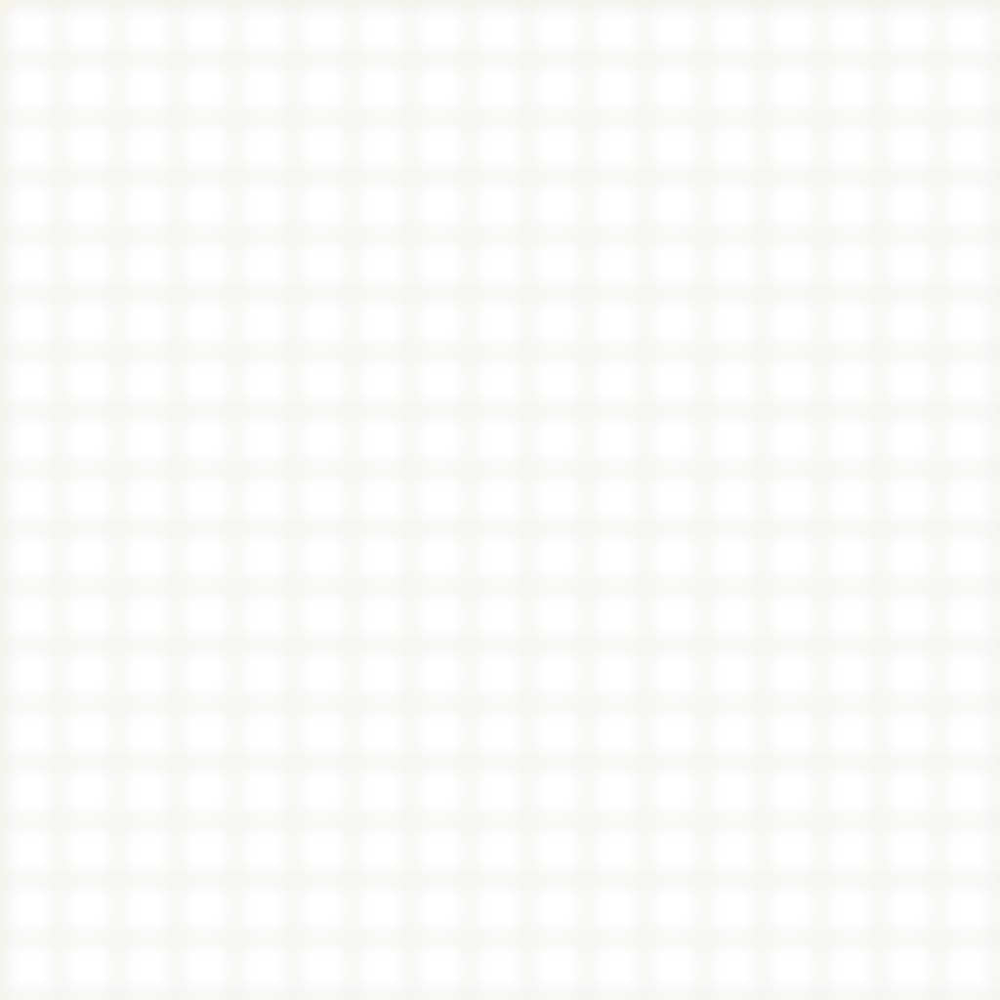
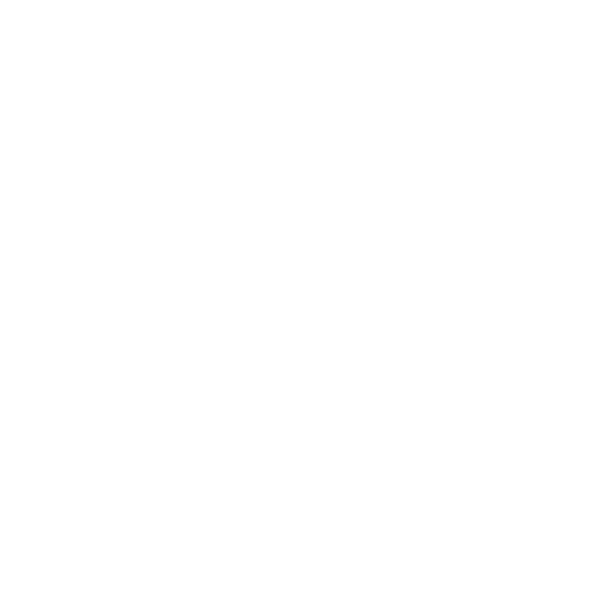
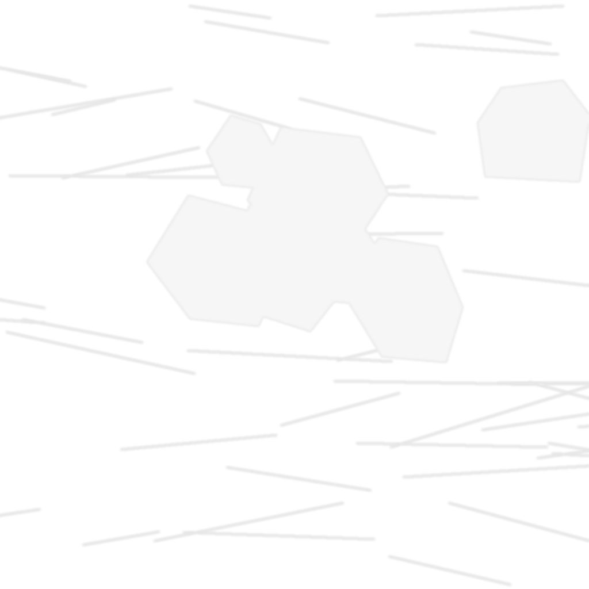

Tag 1
0% → Vegetationsphase




Schalte mit Pro frei oder sieh eine Anzeige.
Wähle eine Aktion.
Status: inaktiv
Ereignisdetails erscheinen hier, sobald ein Ereignis aktiv ist.
Abklingzeit: bereit
Dieses MVP enthält ein gesperrtes Platzhaltermodul für Diagnose.
0
Status: -
-
Einmalige Grundeinstellungen für diesen Durchlauf.
Kurzursache
Letzte Aktionen / Events
Text